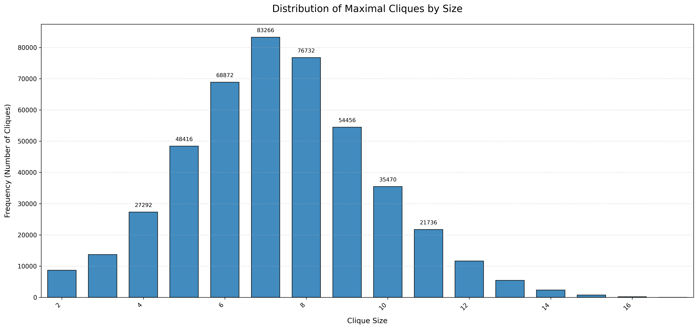

Comparison¶
Assumptions¶
We skip 1-sized cliques as they are trivial.
By excluding 1-sized cliques across all algorithms, we ensure a fair performance comparison focused on the algorithms' ability to find non-trivial maximal cliques.
Time Complexities¶
Chiba¶
Preprocessing¶
- Sorting vertices by degree: O(n log n)
- Vertex renumbering: O(n + m)
- Creating new adjacency lists: O(m)
UPDATE¶
The UPDATE function is called recursively to enumerate all maximal cliques. For each vertex i:
Set Operations¶
Computing intersection and difference: O(|C| + |adj[i]|) as it uses efficient linear-time merge of sorted collections
Pruning Conditions¶
- First pruning check: O(|adj[i]|)
- Second pruning check (with FLAG): O(p × degree), where p is the size of the difference set
- Final pruning verification: O(n)
Worst-Case Time Complexity¶
O(3^(n/3)), coming from:
- Moon-Moser graphs: up to 3^(n/3) maximal cliques
- Each recursive call explores two branches (include or exclude)
- Recursion depth can reach n
Space Complexity¶
- Adjacency lists: O(n + m)
- Recursion stack: O(n) in worst case
- Auxiliary arrays S and T: O(n)
- Temporary sets and vectors: O(n)
Tomita¶
EXPAND¶
EXPAND Function depends on
- Number of recursive calls
- Operations within each call
- Pivot selection strategy
Set Operations¶
vector<int> intersection(const vector<int>& a, const vector<int>& b) {
vector<int> result;
set_intersection(a.begin(), a.end(), b.begin(), b.end(), back_inserter(result));
return result;
}
vector<int> difference(vector<int> a, const vector<int>& b) {
vector<int> result;
set_difference(a.begin(), a.end(), b.begin(), b.end(), back_inserter(result));
return result;
}
Both operations are O(|a| + |b|) since the vectors are sorted.
Pivot Selection¶
for (int u : SUBG) {
vector<int> intersection_result = intersection(cand, G[u]);
if ((int)intersection_result.size() > max_size) {
max_size = intersection_result.size();
pivot = u;
}
}
- Time complexity: O(|SUBG| × (|cand| + max degree))
- For each vertex, we compute the intersection between candidate set and its adjacency list
- This selection process is crucial for pruning the search tree
Recursive Branching¶
for (int q : ext) {
Q.push_back(q);
vector<int> cand_q = intersection(cand, G[q]);
vector<int> subg_q = intersection(SUBG, G[q]);
EXPAND(G, cand_q, subg_q);
Q.pop_back();
cand.erase(remove(cand.begin(), cand.end(), q), cand.end());
fini.push_back(q);
}
cand.erase(remove(...))is O(|cand|)- Each recursive call has reduced sets cand_q and subg_q
- The pivoting strategy minimizes |ext|, reducing branching factor
Overall Time Complexity¶
The worst-case time complexity is O(3^(n/3)), where n is the number of vertices, matching the theoretical limit for maximal clique enumeration.
For this our implementation:
- The pivot selection is optimized but still takes O(n × d) time per recursion level
- The set operations are using standard library functions with O(n) complexity
- The dynamic set management using
cand.erase(remove(...))has an additional overhead
Space Complexity¶
- O(n) for recursion stack depth
- O(n) for the current clique (Q)
- O(n²) for graph representation (adjacency lists)
- O(k) for clique distribution map, where k is the number of different clique sizes
The overall space complexity is O(n²).
Bron¶
Components¶
find_order- Degeneracy Ordering Uses a bucket-based algorithm to find a degeneracy ordering Time complexity: O(n + m) where n is the number of vertices and m is the number of edgesbron_kerbosch_pivot- Core Recursive Function Worst-case time complexity for the basic Bron-Kerbosch: O(3^(n/3)) which is optimal for listing all maximal cliques Pivot selection improves the average case but doesn't change the worst-case boundfind_pivot_sorted- Pivot Selection For each candidate pivot, checks connections to vertices in P Time complexity: O(|P| + |X|) * Δ where Δ is the maximum degreeset_intersection_with_adj- Set Intersection Uses binary search to find common elements Time complexity: O(|adj| * log(|vec|))
Overall Complexity¶
Using degeneracy ordering as implemented in bron_kerbosch_modified provides a time complexity bound of O(d × 3^(d/3) × n), where:
- d is the degeneracy of the graph (the maximum value of the minimum degree in any subgraph)
- n is the number of vertices
For sparse graphs where d<< n, this significantly improves on the O(3^(n/3)) bound.
Space Complexity¶
- Storage for the graph: O(n + m)
- Recursion stack depth: O(n) (worst case)
- Various temporary sets (P, R, X): O(n) each
The total space complexity is O(n + m).
Results¶
The following graphs show the results obtained from the 3 algorithms
Wiki Dataset¶

Email Dataset¶

Skitter Dataset¶

Performance¶
The following graphs help to visualize the performance of the 3 algorithms